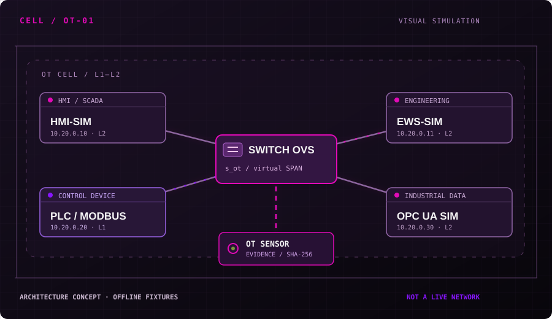

Manual de laboratório
Arquitetura, documentação didática, mapa de eventos e limites das modalidades de execução.
Abrir manual →Uma bancada independente de redes IT/OT para estudar topologias, testar detectores e produzir evidências verificáveis. A observabilidade começa no laboratório, não no marketing.

Topologias didáticas derivadas dos módulos do projeto. Selecione um ativo para inspecionar seu papel; a visualização não consulta dispositivos ou redes.
Hosts, serviços e enlaces definidos por código.
Traces sintéticos ou captura obtida no laboratório.
Achados explicáveis ligados a um caso e hipótese.
JSON e hash SHA-256 para checagem de integridade.
Resultados do arquivo out/runner_summary.json são uma fotografia de execução no modo sim. Não são eventos ao vivo, nem prova de capacidade em produção.
Nenhum cenário corresponde aos filtros.
O portal é uma camada visual de leitura. O código-fonte, os testes, as evidências e os limites do emulador continuam sendo o produto de verdade.
Arquitetura, documentação didática, mapa de eventos e limites das modalidades de execução.
Abrir manual →Seis casos IT e seis OT com traces e resultados versionados para inspeção técnica.
Ver catálogo →Esquema de eventos, normalização, comparação de achados e integridade de conteúdo.
Entender eventos →